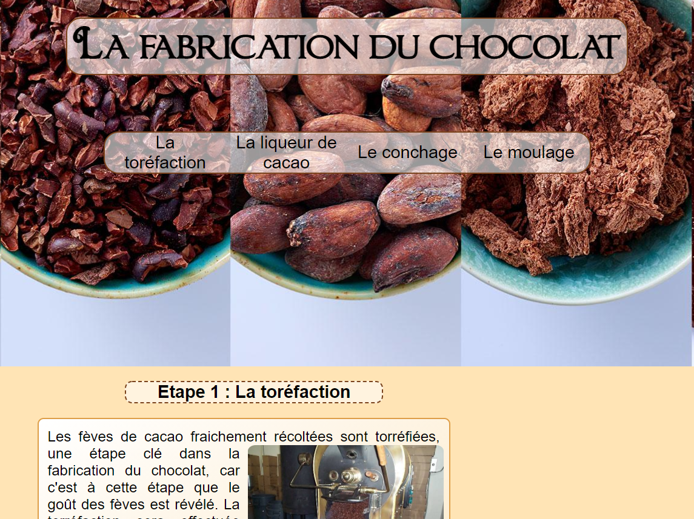

Projet de Web
Le Projet de Web consiste à réaliser un site web en groupe de 5 sur un des 3 sujets proposé (le chocolat, les jeux vidéos ou l'écologie). Le but étant de réaliser plusieurs page web en abordant différents sous thèmes du sujet. Un des objectifs sera également d'approndir le langage HTML ainsi que le CSS et de les utilisers dans des cas réels plutot que sur des exercices basiques.
Le projet avait donc 3 contraintes majeures :- Créer une version classique ainsi qu'une version mobile du site.
- Créer un seul CSS pour les 2 versions.
- Uniquement utiliser les technologies HTML et CSS

Pour ma part je me suis occupé de la réalisation d'une page d'un site concernant le chocolat.
La page que je devais réaliser était la page sur "La Fabrication du Chocolat".
